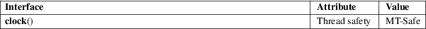

clock − determine processor time
Standard C library (libc, −lc)
#include <time.h>
clock_t clock(void);
The clock() function returns an approximation of processor time used by the program.
The value returned is the CPU time used so far as a clock_t; to get the number of seconds used, divide by CLOCKS_PER_SEC. If the processor time used is not available or its value cannot be represented, the function returns the value (clock_t) −1.
For an explanation of the terms used in this section, see attributes(7).

XSI requires that CLOCKS_PER_SEC equals 1000000 independent of the actual resolution.
On several other implementations, the value returned by clock() also includes the times of any children whose status has been collected via wait(2) (or another wait-type call). Linux does not include the times of waited-for children in the value returned by clock(). The times(2) function, which explicitly returns (separate) information about the caller and its children, may be preferable.
C11, POSIX.1-2008.
POSIX.1-2001, C89.
In glibc 2.17 and earlier, clock() was implemented on top of times(2). For improved accuracy, since glibc 2.18, it is implemented on top of clock_gettime(2) (using the CLOCK_PROCESS_CPUTIME_ID clock).
The C standard allows for arbitrary values at the start of the program; subtract the value returned from a call to clock() at the start of the program to get maximum portability.
Note that the time can wrap around. On a 32-bit system where CLOCKS_PER_SEC equals 1000000 this function will return the same value approximately every 72 minutes.
clock_gettime(2), getrusage(2), times(2)